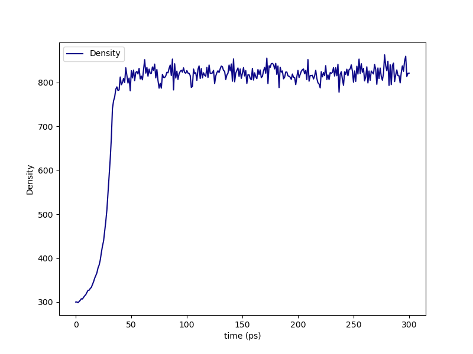

Running the Build¶
Now, in our working directory my_dgeba_pacm_build, we are ready to launch HTPolyNet:
$ cd my_dgeba_pacm_build
$ ls
DGE-PAC.yaml lib/
$ htpolynet run DGE-PAC.yaml -lib lib -log my_build.log --loglevel debug &
[1]
$ ls
DGE-PAC.yaml my_build.log lib/ proj-0/
$
HTPolyNet is instructed here to use the local ./lib/ as the molecule library; not including a value for -lib forces HTPolyNet to use the system library in the Library subpackage, and if you are making new molecules, they won’t be there. It is also instructed to write logging messages to my_build.log at the debug (most informative) level. The build can take several hours, so we are running it in the background. All the action is happening in proj-0 (and of course being reportedon in my_build.log), so let’s look in there.
Parameterization results¶
The first major block of calculations involves parameterizing all required molecular templates. So after a few minutes, we can inspect the parameterization results while the build continues:
$ cd proj-0
$ ls
molecules/ plots/ systems/
$ cd molecules/parameterized
$ ls DGE*.gro
DGEC-1.gro DGEC.gro DGE.gro DGE-SC-0-1.gro DGE-SC-1-0.gro DGE-SC-1-1.gro
$
What are we seeing here? These are the gro files generated by antechamber-parmchk2-tleap-parmed processing for the original DGEBA molecule in DGE.mol2, the oxirane-regenerated molecules DGEC (C1 bonds to O1) and DGEC-1 (C2 bonds to O2), and the three stereoisomers of the original DGEBA structure, called DGE-SC-0-1.gro etc. Notice that DGEC was the product in the explicit Oxirane-generation reaction dictionary; DGEC-1 is generated by the symmetry-equivalent reaction. Each of DGEC-1.gro, DGEC.gro, and DGE.gro also have companion mol2, top, itp, and sea files. The mol2’s are generated by antechamber and can be considered “intermediates” in the parameterization process. The original input mol2 files in the lib/molecules/inputs/ directory remain untouched. The top and itp files are Gromacs-specific topology files, of course. The sea files are atom-indexed listings of symmetry-set indices; most are -1 but atoms identified as belonging to the same symmetry sets are given unique set-specific values for this attribute. The stereoisomer gro files don’t need their own topology files. But there is a lot more in this directory:
$ ls PAC*gro
PACDGE-1.gro PACDGE2-1.gro PACDGE2-2.gro PACDGE2-3.gro PACDGE2-4.gro
PACDGE2-5.gro PACDGE2-6.gro PACDGE2-7.gro PACDGE-2.gro PACDGE2.gro
PACDGE-3.gro PACDGE.gro PAC.gro PAC-SC-0-1.gro PAC-SC-1-0.gro
PAC-SC-1-1.gro
$
First, note the gro files for PAC and its three stereoisomers. You can also see gro files for PACDGE, PACDGE-1, PACDGE-2, and PACDGE-3; PACDGE is the product of the explicit Primary-to-seconary-amine reaction dictionary, but what are these other three? These are the results of so-called “symmetry-expansion” of the original reaction based on the symmetry-equivalent atom declaraions. The first, PACDGE, results from N1 of PACM bonding to C1 of DGEBA. Since N1 is symmetric to N2 and C1 to C2, then the other three products are the result of N1-C2 (PACDGE-1), N2-C1 (PACDGE-2), and N2-C2 (PACDGE-3) bonds, respectively. These are automatically enumerated by HTPolyNet because of the symmetry declarations.
You also see a gro file for PACDGE2, and then for seven other symmetry partners PACDGE2-1 to PACDGE2-7. Why are there eight distinct tertiary amine products? The baseline product PACDGE2 is formed by reacting the N1 of PACDGE to the C1 of DGE, but remember that PACDGE is formed by the reaction of N1 of PAC and C1 of a different DGE. So the “sequence” of the product is PAC - DGE - DGE and each has a reactive atom in a symmetry set of size two; three slots with two possibilities in each is 23 = 8 realizations. Each of these also have their own companion mol2, top, itp, and sea files.
Liquid generation and densification¶
After a few more minutes, when the densification MD simulation has finished, let’s back out of the molecules/parameterized/ subdirectory and drop into systems/init/:
$ cd ../../systems/init
$ ls -1
DGE.gro
DGE-SC-0-1.gro
DGE-SC-1-0.gro
DGE-SC-1-1.gro
gmx.in
init.gro
init.grx
init-minimized.edr
init-minimized.gro
init-minimized.log
init-minimized.tpr
init-minimized.trr
init.top
liquid-densify-npt.mdp
mdout.mdp
minimize.mdp
npt-1.cpt
npt-1-density.xvg
npt-1.edr
npt-1.gro
npt-1.log
npt-1-out.xvg
npt-1.tpr
npt-1.trr
PAC.gro
PAC-SC-0-1.gro
PAC-SC-1-0.gro
PAC-SC-1-1.gro
$
The PAC and DGE gro files are used by gmx insert-molecules to build the initial coordinates of the low-density system, which appear in init.gro. HTPolyNet built the initial topology init.top using the template topologies, and init.grx (a “Gromacs-extended” coordinate file) contains some additional atomic attributes HTPolyNet needs. The mdp file minimize.mdp is “checked-out” from the system library and combined with init.top and init.gro via gmx grompp to build the mdrun input init-minimized.tpr. The results of that minimization are all the init-minimized files. Densification is governed by the liquid-densify-npt.mdp file, also checked-out from the system library. The densification results are all in the npt-1 files. The set init.top, init.grx, and npt-1.gro together constitute the “densified” state of the liquid system, and these are what initiates the CURE iterations to follow.
However, first a little detour: let’s go up out of systems/init and into plots/:
$ cd ../../plots
$ ls
init-density.png
HTPolyNet automatically generates a plot of density vs. time for the densification simulation:
We can see that we’ve successfully arrived at the liquid-like density of about 1,000 kg/m3.
The first CURE iteration¶
The next major part of the build is the first CURE iteration, which is the most expensive because the pair searching is most demanding when the number of reactive atoms is maximal. So let’s back out of plots and drop into systems/iter-1. For a long time (maybe an hour or so), all you will see is:
$ cd ../systems/iter-1
$ ls
linkcell-0.50.grx
That is an auxiliary file storing a link-cell index for each relevant atom (HTPolyNet uses a link-cell algorithm to perform the bond searching). However, once the bond search is complete and any dragging or relaxation is done, we’ll see a large number of files. They can be divided into seven “phases”:
Bondsearch system
Dragging
Topology update
Relaxation
Equilibration
Finalization
Auxiliary files
Names of files corresponding to states 0-5 all begin with their respective digits. Names of files that do not begin with a digit are “auxiliary”. Let’s consider the files in the seven states.
Bondsearch state files¶
Files associated with the bondsearch begin with 0:
$ ls 0-*
0-connect-bonds.csv 0-connect.gro 0-connect.grx 0-connect.top
The gro and top files are sufficient Gromacs input. The grx file contains values of four extra attributes for each atom:
globalIdx z cycle-idx reactantName
1 0 0 DGE
2 0 0 DGE
3 0 0 DGE
4 0 2 DGE
5 0 2 DGE
6 0 2 DGE
7 0 2 DGE
8 0 2 DGE
9 0 2 DGE
10 0 0 DGE
11 0 0 DGE
12 0 0 DGE
13 1 0 DGE
14 1 0 DGE
(file continues)
globalIdx corresponds to the nr in the [ atoms ] directive of a top file, or the atomNum attribute of a gro file; it is just the global atom index. z is the current value of the number of availale crosslink bonds for that atom. cycle-idx are unique indices indicated which ring the atom belongs to; rings are labeled uniquely within a residue. Finally, reactantName is initialized as the residue name the atom belongs to. However, as we will see, this attribute is key for communicating which product template maps onto a set of particular residues that react.
The csv file is a dump of the bonds data frame:
26515 8070 PACDGE-2 0.42452443981471805
29836 20684 PACDGE-2 0.42568650436676986
31311 21384 PACDGE-1 0.4260152579427174
30574 7858 PACDGE-2 0.4264387412044077
36395 21479 PACDGE 0.42664739539812047
29753 21437 PACDGE-1 0.4269297366077936
26925 21914 PACDGE-3 0.4275839098937192
32131 5420 PACDGE 0.42771135126391024
34673 21013 PACDGE-1 0.42801051388955424
35371 13211 PACDGE-2 0.42913165823555866
29508 14971 PACDGE-3 0.4292621576612602
30655 21002 PACDGE 0.4300581356049432
28647 11102 PACDGE-3 0.4304242093563047
The file does not have a heading, but the first two columns are pre-bond global atom indices for each bond-designate; the third column is the product template of the reaction type that forms this bond, and the fourth column is the instantaneous interatomic distance in nm. This is the first real output of the bond search.
Dragging states files¶
Files associated with prebond dragging begin with 1. However, because no bond-designate length exceeded 0.5 nm, no dragging is triggered. So the build proceeds to topology update.
Topology update state files¶
Files associated with the topology update process begin with a 2:
$ ls 2-*
2-update-bonds.csv 2-update.gro 2-update.grx 2-update-resid-graph.json 2-update.top
Again, the gro and top are proper Gromacs inputs, and the grx file tabulates all z, cycle-idx, and reactantName attributes. The csv file reports the bond dataframe, and the json file represents the graph structure of the network on a resid basis. Importantly, these states must be written here because the topology update deletes two hydrogen atoms for each bond created, and therefore all atoms are reindexed, necessitating reindexing all atom indices in the topology. Therefore, all Gromacs state files in the 0 and 1 states are not in the same registry as those in the states 2 and up.
Relaxation states files¶
Files that begin with a 3 correspond to bond relaxation stages. In this example, eigth stages are run. Each stage produces 22 output files: the bonds csv, the gro / grx / top that initializes the first stage, and then the 17 outputs from the minimization (5), nvt (6), and npt (6) sub-stages:
$ ls 3-*
3-relax-stage-1-bonds.csv
3-relax-stage-1.gro
3-relax-stage-1.grx
3-relax-stage-1-min.edr
3-relax-stage-1-min.gro
3-relax-stage-1-min.log
3-relax-stage-1-min.tpr
3-relax-stage-1-min.trr
3-relax-stage-1-npt.cpt
3-relax-stage-1-npt.edr
3-relax-stage-1-npt.gro
3-relax-stage-1-npt.log
3-relax-stage-1-npt.tpr
3-relax-stage-1-npt.trr
3-relax-stage-1-nvt.cpt
3-relax-stage-1-nvt.edr
3-relax-stage-1-nvt.gro
3-relax-stage-1-nvt.log
3-relax-stage-1-nvt.tpr
3-relax-stage-1-nvt.trr
3-relax-stage-1.top
...
3-relax-stage-8-bonds.csv
3-relax-stage-8.gro
3-relax-stage-8.grx
3-relax-stage-8-min.edr
3-relax-stage-8-min.gro
3-relax-stage-8-min.log
3-relax-stage-8-min.tpr
3-relax-stage-8-min.trr
3-relax-stage-8-npt.cpt
3-relax-stage-8-npt.edr
3-relax-stage-8-npt.gro
3-relax-stage-8-npt.log
3-relax-stage-8-npt.tpr
3-relax-stage-8-npt.trr
3-relax-stage-8-nvt.cpt
3-relax-stage-8-nvt.edr
3-relax-stage-8-nvt.gro
3-relax-stage-8-nvt.log
3-relax-stage-8-nvt.tpr
3-relax-stage-8-nvt.trr
3-relax-stage-8.top
The attenuation is managed by the sequential top files. Let’s look at the entry for a particular bond in each top file’s [ bonds ] directive:
$ grep "^23795 29736" 3*top
3-relax-stage-1.top:23795 29736 1 0.3204220617308803 34089.14
3-relax-stage-2.top:23795 29736 1 0.29557176719789735 68178.28
3-relax-stage-3.top:23795 29736 1 0.2707214726649145 102267.42
3-relax-stage-4.top:23795 29736 1 0.24587117813193157 136356.56
3-relax-stage-5.top:23795 29736 1 0.22102088359894867 170445.7
3-relax-stage-6.top:23795 29736 1 0.1961705890659658 204534.84
3-relax-stage-7.top:23795 29736 1 0.1713202945329829 238623.97999999998
3-relax-stage-8.top:23795 29736 1 0.14647 272713.12
$
In a [ bonds ] topology directive, the 4th and 5th columns are b0 and kt harmonic bond parameters. In the stage-8 top, we see these parameters at their proper force-field values for a C-N single bond. Notice how the value of the distance parameter b0 begins at a large initial value and systematically decreases toward the target (but never by more than an increment of 0.05 nm), while the spring constant kt starts low and increases systematically toward its target.